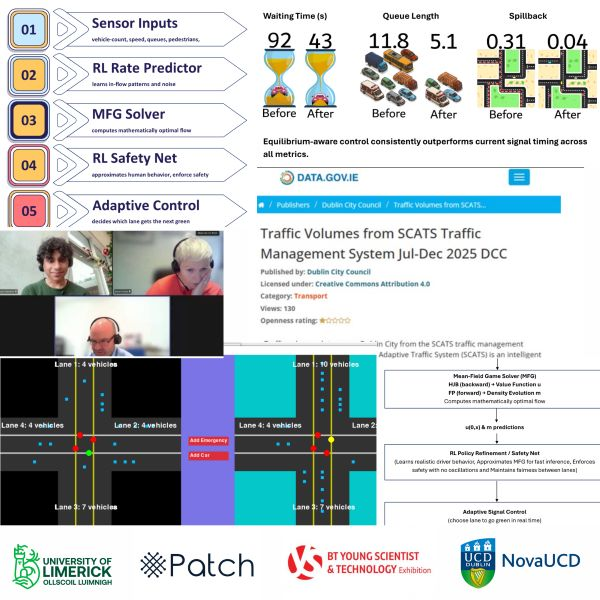

Mean-Field Game Theory for Adaptive Predictive Traffic Signal Control . A Hybrid AI-Mathematical Framework for Equilibrium-Based Optimisation at Urban Intersections
The average commuter loses over a week every year sitting in traffic. This research models junction flow through Mean-Field Game Theory and Reinforcement Learning to reduce waiting times using existing sensors.
Read more